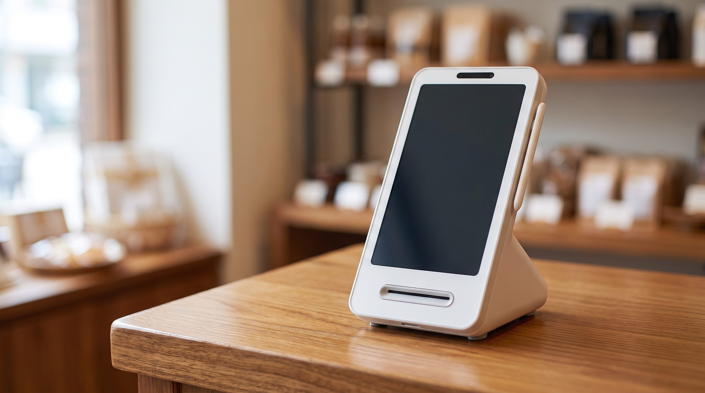

카드기, 승인이 안 될 때 카운터에서 먼저 볼 세 곳 — 카드단말기 점검 순서
손님은 카드를 내밀고 서 있는데 화면만 깜빡이고 승인이 떨어지지 않습니다. 그 자리에서 검색창을 여신 사장님이 적지 않으실 겁니다. 오늘은 A/S를 부르기 전에 카운터에서 먼저 확인할 순서를 정리했습니다.
결론부터 말씀드리면, 카드기 승인이 안 되는 상황은 기기 고장보다 통신·용지·카드 접점 쪽인 경우가 많습니다.
- 통신부터 봅니다
유선이면 단말기 뒤쪽 랜선이나 전화선이 헐거워졌는지, 무선이면 와이파이 표시가 살아 있는지 확인합니다. 손님 응대 중에 발로 선을 건드려 빠지는 일이 생각보다 자주 있습니다.
- 영수증 용지함이 제대로 닫혔는지 확인합니다
용지가 다 떨어졌거나 뚜껑이 덜 닫히면 승인 자체를 진행하지 않고 멈추는 기종이 있습니다. 용지를 새로 끼우고 뚜껑이 딸깍 소리가 날 때까지 눌러 봅니다.
- 카드 접점을 의심합니다
IC 칩이 긁혔거나 이물이 묻으면 인식이 안 됩니다. 마른 천으로 칩을 한 번 닦고 다시 꽂아 보시고, 그래도 안 되면 다른 카드로 한 번 시도해 봅니다.
- 한 장만 안 되는지, 전부 안 되는지 나눕니다
다른 카드가 정상으로 승인되면 단말기 문제가 아니라 그 카드 쪽 사정입니다. 손님께 다른 결제수단을 안내드리면 줄을 세우지 않고 넘어갈 수 있습니다.
- 전원은 마지막에, 순서대로 끕니다
곧바로 코드를 뽑기보다 전원 버튼으로 정상 종료한 뒤 30초쯤 두었다가 켭니다. 급하게 뽑았다 꽂으면 통신 설정이 다시 잡히는 데 오히려 더 걸립니다.
- 연락 전에 세 가지를 메모해 둡니다
화면에 뜬 오류 표시, 마지막으로 정상 승인된 시각, 유선인지 무선인지. 이 세 가지만 있으면 전화 통화가 훨씬 짧아집니다.

위 1~5번을 다 해도 같은 증상이 반복된다면, 그때는 기기 자체를 점검하는 단계입니다. 카운터가 좁은 매장이라면 토스단말기처럼 크기가 작고 통신 방식이 단순한 기종이 대안이 되기도 합니다. 정품 신제품 보증 · 수도권 직영 설치를 원칙으로 하고 있어, 증상만 알려 주시면 방문 점검부터 상담해 드립니다.
승인이 멈추는 순간 매장에서는 줄이 멈춥니다. 위 순서를 카운터 한쪽에 붙여 두시면 다음번에는 훨씬 빨리 지나갑니다. 증상이 계속되면 편하게 연락 주세요.
- 📞 전화상담 1544-7754
- 🌐 홈페이지 https://nwpos.co.kr

📷 인스타그램 팔로우 https://www.instagram.com/nurinetworkspos

▶️ 유튜브 구독 https://www.youtube.com/@nurinetworks
(2026년 8월 기준)